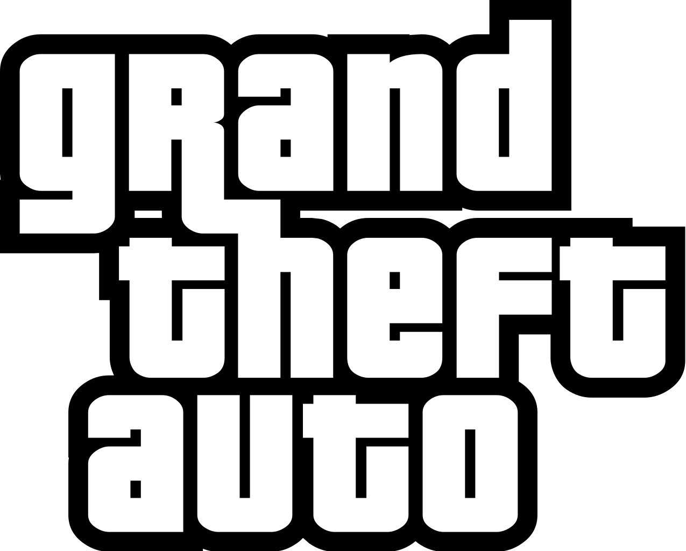
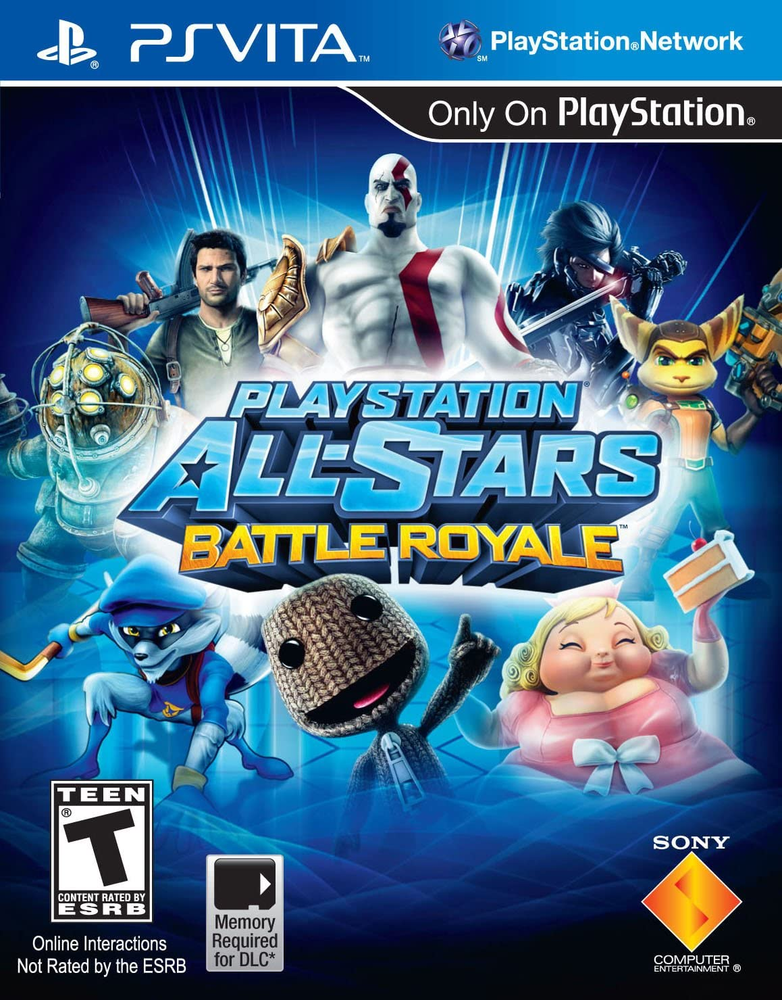

Classic Role Playing game known by everyone.Final Fantasy VII is a game where you follow the character Cloud Strife a mercenary
who joins and works with an eco-terrorist organization to stop and mega-corperate organization from stealing the planets
life source and use it as energy.
Classic Role Playing game known by everyone.Final Fantasy VII is a game where you follow the character Cloud Strife a mercenary
who joins and works with an eco-terrorist organization to stop and mega-corperate organization from stealing the planets
life source and use it as energy.
Prequels: Final Fantasy VII Crisis Core(PSP)
Consoles: Sony Playstation 1
Amount of Player(s): 1
 The Grand Theft Auto series with multple games is a Role Playing Game which allows free roaming in a expansive world. Where Characters are granted a large amount of freedom. Where the game focuses on missions to progress the main story with various of activities such as driving and even more and as well Grand Theft Auto has similar gameplay similar to beat em ups from the 16 bit century. Grand Theft Auto appears on many
Games:Grand Theft Auto 1,2,3,4,5 Grand Theft Auto Vice City,Chinatown Wars,London,Liberty City
Consoles: Various Platforms and games such as Playstation 1,2,3,4,5 and on the Playstation Portable
Amount of Player(s): 1
 LittleBigPlanet is 2D sidescrolling platform game based on the original LittleBigPlanet. The game was released in 2009 for the PlayStation Portable
and was later ported to the PlayStation Vita via the PlayStation Store. The game was developed by Sony Computer Entertainment Europe Cambridge Studio
and published by Sony Computer Entertainment Europe. In this game you play as a character named Sackboy in a 2d side scroller similar to super Mario where you explore
and move through the levels to progress through the story. There are many games to this but the oringal was first on the Playstation Portable.
LittleBigPlanet is 2D sidescrolling platform game based on the original LittleBigPlanet. The game was released in 2009 for the PlayStation Portable
and was later ported to the PlayStation Vita via the PlayStation Store. The game was developed by Sony Computer Entertainment Europe Cambridge Studio
and published by Sony Computer Entertainment Europe. In this game you play as a character named Sackboy in a 2d side scroller similar to super Mario where you explore
and move through the levels to progress through the story. There are many games to this but the oringal was first on the Playstation Portable.
Consoles: Sony Playstation Portable,PS VITA
Amount of Player(s): 1
 Tomb Raider is an action-adventure video game in which the player assumes the role of
an adventurer Lara Croft, who navigates through a series of ancient ruins and tombs with dangerous traps
in search of an ancient artifact.
Tomb Raider is an action-adventure video game in which the player assumes the role of
an adventurer Lara Croft, who navigates through a series of ancient ruins and tombs with dangerous traps
in search of an ancient artifact.
Consoles: Playstation 1
Amount of Player(s): 1
 PlayStation All-Stars Battle Royale is a fighting game, similar to the style of Nintendo's Super Smash Bros. series. Up to four players can battle each other using characters from various Sony franchises such as God of War, PaRappa the Rapper, Infamous, and Sly Cooper, as well as third-party franchises like BioShock.
Consoles: Playstation Vita,Playstation 3
Amount of Player(s): Can be played Up to 4 Players